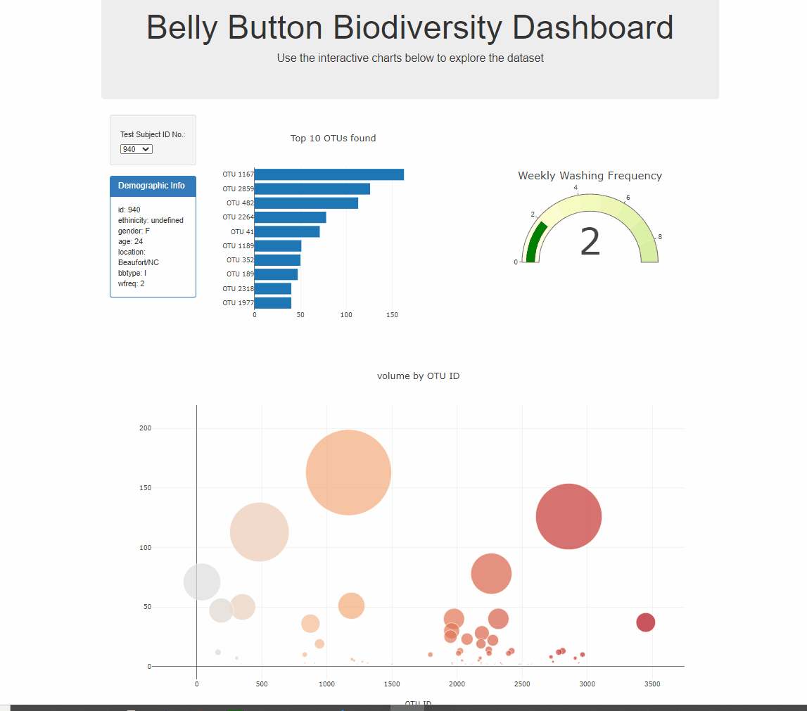

Background: The purpose of this project is to use
belly button biodiversity data in JSON format and build an interactive dashboard on a
website. The dataset contains test subject's demographic information along with OTU information.
Methods: The interactive dashboard was built by using html, js and json along with d3 and plotly libraries. A user can filter the data by using a dropdown menu and by selecting a subject ID, various plots and the demographic information will be updated accordingly.
<Preview>
